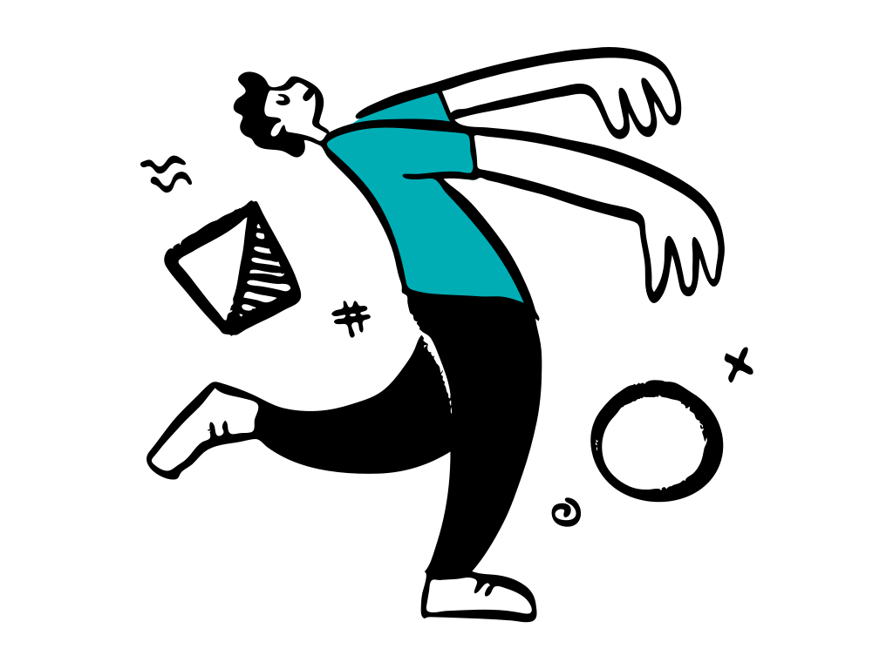

What is your Learning Style Archetype?
Discover which profile best matches your learning style and development of your interests and passions.
Question 1
When you find something new that interests you, how do you typically approach it?
I obsess over a new interest and intensely learn everything about it.
I check if it has something to do with my area of expertise to know if it's worth learning.
I explore to see what it's about and how it connects with something I know.
If it has a bit of relation to my main expertise, I would like to check it out and explore it.
@ Made by Ben Keller
Question 2
When searching for content on YouTube or the web, you're most likely to:
Look for in-depth tutorials or content in your area of expertise.
Browse through a variety of topics and watch a bit of everything.
Search for videos or content on multiple unrelated subjects that intrigue you.
Focus on your main interests, but also explore some related content.
@ Made by Ben Keller
Question 3
What do you think is the biggest challenge of your learning style?
Adapting to tasks or situations outside my area of expertise.
Developing deep expertise in a specific field while maintaining broad knowledge.
Managing time effectively across my multiple diverse interests and projects.
Balancing the depth of my main expertise with my other related interests.
@ Made by Ben Keller
Question 4
Your friends or coworkers would describe you as a person who is:
Mainly focused on one area, but with surprising knowledge in others.
Open-minded and diverse, always looking for something new.
An expert in a determined field with deep knowledge.
Very diverse and expert-level in several unrelated areas.
@ Made by Ben Keller
Question 5
When starting a new hobby or project, you typically:
Focus on key aspects while keeping an open mind to related areas.
Fully dive into multiple aspects and find unexpected connections between them.
Concentrate on mastering one specific element before moving on.
Explore various facets to get a well-rounded understanding.
@ Made by Ben Keller
Question 6
Your ideal learning experience would be:
An intensive deep-dive into a specific subject with guidance from experts.
Having time to explore and master multiple unrelated skills simultaneously.
A work experience that covers a wide range of interesting topics.
A focused course with opportunities to explore related subjects.
@ Made by Ben Keller
Question 7
When you're browsing a bookstore or online library, you're most likely to:
Head straight to my favorite section and dive into advanced texts.
Wander through different sections, picking up bits from each.
Grab books from multiple unrelated sections that spark my curiosity.
Go to the section of my main interest, but also explore a few other related areas.
@ Made by Ben Keller
Question 8
When it comes to personal growth, you prefer:
Continuously expanding your knowledge and experience across various areas.
Refining your skills to become the best in your chosen field.
Deepening your expertise while staying open to new information and opportunities.
Mastering multiple skills you love that aren't typically combined.
@ Made by Ben Keller
Question 9
In conversations, you're known for:
Bringing up interesting facts from many different fields.
Offering in-depth insights on your area of expertise.
Surprising others with expert knowledge in several unrelated topics.
Sharing detailed knowledge on your main interest and some info on others.
@ Made by Ben Keller
Question 10
Your ideal career path would involve:
Regularly switching between distinctly different roles, areas, industries, and/or projects.
Becoming a leading expert in a specific niche.
Experiencing various positions across different sectors and areas.
Advancing in your main field while exploring related opportunities.
@ Made by Ben Keller
Your Learning Style Archetype:

Illustrations by Pablo Stanley
Remember, regardless of your profile, your learning journey is valuable. Embrace your unique path and the diverse experiences you've gained!
@ Made by Ben Keller
Follow me on